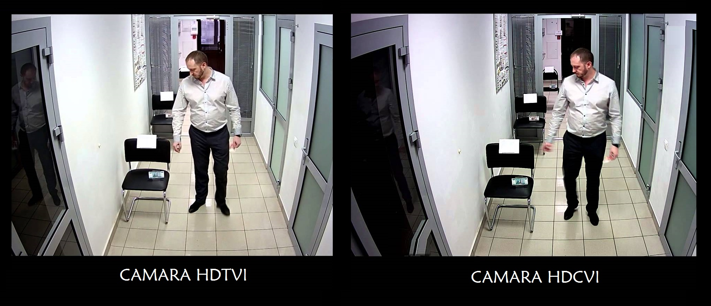

Kit 720P HDCVI
Este kit de vigilancia está conformado por el dvr HCVR4104CS3N y la cámara HFAW1000R28S3, el dvr es tri-híbrido que soporta 3 tecnologías diferentes (análogo/ hdcvi/ ip), la cámara pertenece a la serie S3 que cuenta con la tecnología desarrollada por dahua llamada hdcvi, la cual se transmite video de alta definición mediante cable coaxial en el caso de esta cámara a 720p (1280x720). Puede ser utilizada en ambientes exteriores debido a su índice de Protección ip67.
Incluye
- 1 DVR Tri-híbrido HCVR4104CS3N.
- 4 cámaras bullet HFAW1000R28S3.
- 4 rollos de cable siames.
- Fuente de alimentación (para las 4 cámaras).
Características principales del DVR:
- H.264/ H.264+.
- HDMI/VGA simultáneos.
- Audio Bidireccional.
- Soporta múltiples marcas de cámaras IP: Dahua, Arecont Vision, AXIS, Bosch, Brickcom, Canon, CP Plus, Dynacolor, Honeywell, Panasonic, Pelco, Samsung, Sanyo, Sony, Videotec, Vivotek and etc.
- ONVIF versión 2.4.
- Posicionamiento 3D inteligente con PTZ DAHUA.
- Soporta 1 SATA HDD hasta 6TB, 2 USB2.0.
- Web viewer, CMS (DSS/Smart PSS) y Smart Phone (DMSS).
- Analógico: 4 Canales Full 960h.
- HDCVI: 4 Canales 720p 30fps.
- IP: 1 Canal ip adicional (hasta 2mp).
La cámara HFAW1000R28S3 encontramos su magnífico desempeño en ambientes de luz, ya que incorpora el IR Inteligente permitiendo captar la imagen bajo ambientes de baja luminosidad,asi como la función DWDR que se encarga de medir, compensar y ajustar la luz en la imagen para grabar, BLC compensa las situaciones de contraluz para evitar que la cámara se encandile con la gran intensidad de luz que recibe y produzca una imagen insatisfactoria.

Características principales de la cámara:
- 1 Megapíxel 1/4" CMOS.
- Máx 30fps@720P(1280X720).
- Menú OSD. (Requiere PFM820 para 4 en 1)
- Alta Definición.
- Día/noche Auto(ICR), color, blanco y negro.
- Múltiple monitoreo de red: Web viewer, CMS(DSS/PSS) & DMSS.
- Lente fijo 2.8mm.
- Ángulo de visión de 58.5°.
- Máx. distancia de Leds IR 20mts.
- Función Smart IR.
- IP67.
- Material Policarbonato.
- DC12V.
Aplicaciones
TECNOLOGÍAS DAHUA.
HDCVI (High definition composite video interface)
Es una tecnología desarrollada por Dahua cuyo objetivo es ofrecer resoluciones de alta definición a bajo costo y cuya transmisión de video es sobre cable coaxial, obteniendo resoluciones de 720p y 1080p logrando una transmisión sin retraso y sin perdida, además de enviar 3 señales bajo el mismo cableado (audio, datos y video) hasta una distancia de 1200 mts. con cable RG6 en resolución 720p.
COMPARATIVA HDTVI VS HDCVI.
DISTANCIAS DE HASTA 1200 METROS.
Los sistemas de alta resolución HDCVI permite transmitir señales de video en ultra resolución 720p y 1080p con una distancia de transmisión libre de interferencias hasta 1200 mts.

MONITOREO A TRAVÉS DE SMART PSS.
El Smart PSS es un software de gestión de dispositivos que puede soportar todos los productos de seguridad Dahua. Smart PSS es ampliamente utilizado en la mayoría de los sistemas de vigilancia y de intercomunicación Dahua en pequeños y medianos proyectos. Smart PSS mantiene la facilidad de uso fácil, así como una gran funcionalidad. Vigilar, revisar material de archivo, búsqueda inteligente, alarmas inteligentes, seguimiento inteligente, cada funcionalidad está a su disposición de forma gratuita.
MONITOREO A TRAVÉS DE CELULARES Y TABLETAS.
Puede ser monitoreada a través de dispositivos móviles y tabletas con sistemas operativos IOS y ANDROID con el cual no sólo podrán ver sus cámaras en tiempo real (4, 8, 9,16 cámaras al mismo tiempo), si no también reproducción de grabaciones y manipular PTZ entre otras funciones.